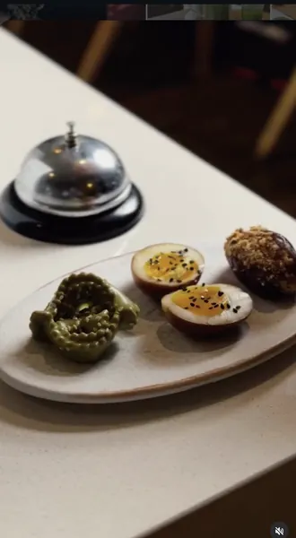
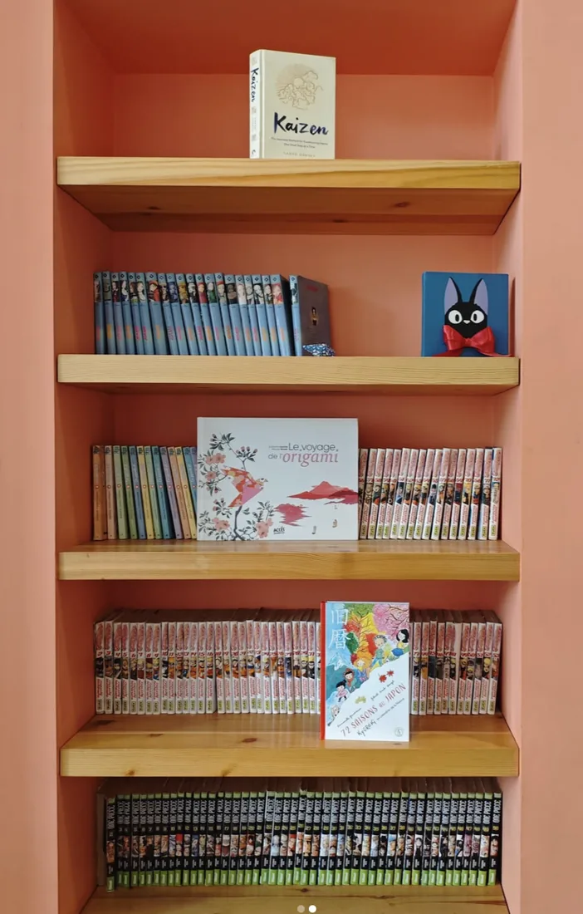
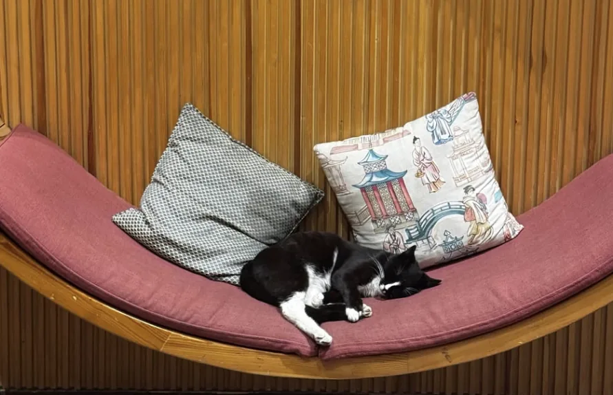
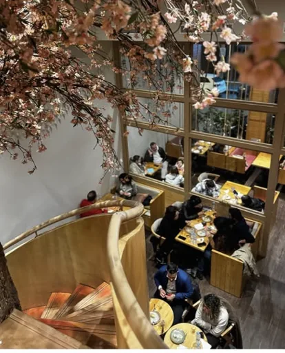
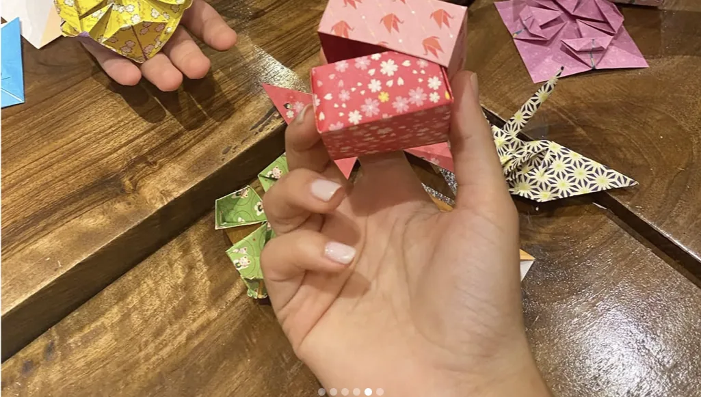
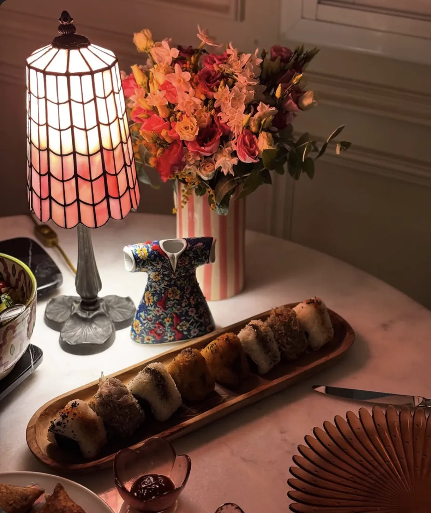
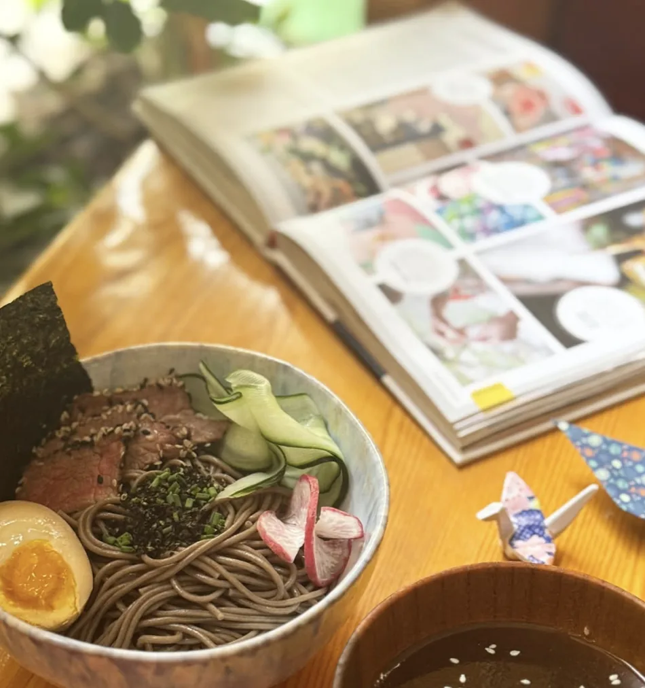
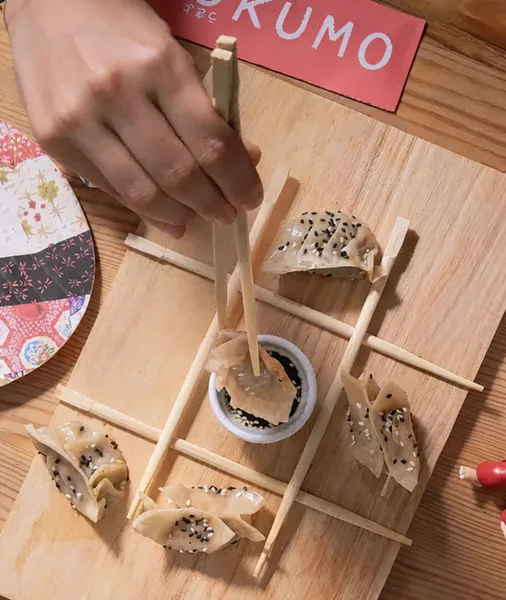
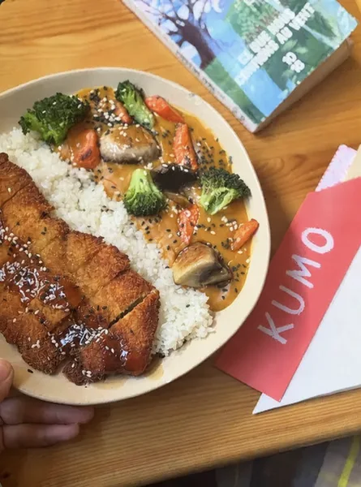

おにぎり Onigiri
Rice parcels wrapped in nori, 3 pieces.
- Spicy tuna60
- Shake shake, salmon avocado70
- Nasu miso, vegan60
- Onigiri mix, 6 pieces130

A Japanese café in the Triangle d'Or. Onigiri, sandos, ramen, mochi and ceremonial matcha. Every day, 12:00 to 22:00.

Coral shelves of manga to read at the table. A cherry tree indoors. Paper cranes folded while you wait.
Come for lunch at noon, stay for mochi at four, and if the evening gets loud, there is a private karaoke room for exactly that.




The new cold ramen: buckwheat soba, thin slices of beef, a soy-marinated egg, nori, cucumber and radish. The umami broth comes on the side, so you dip as you go or pour it all in.

